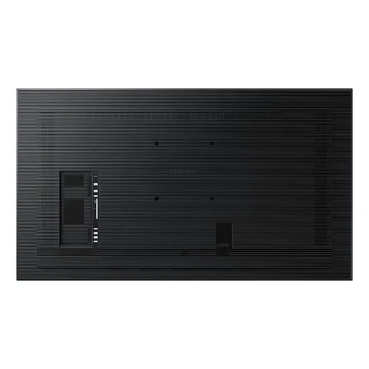

Samsung · Modelo U9500H
Pantalla Samsung Smart TV UHD 4K U9500H
L 60,995
En Walmart
Precio en cada tienda
| Tienda | Precio | Antes | Disponibilidad | |
|---|---|---|---|---|
| Walmart | L 60,995 | — | Disponible | Ver en tienda › |
Precios referenciales tomados de cada tienda el 28 de noviembre de 2026. El precio válido es el que muestra la tienda al comprar.
Historial de precio
Lo seguimos desde el 1 de noviembre. Precio más bajo registrado: L 60,995 en Walmart (1 de noviembre), igual que hoy. El precio no ha cambiado en ese tiempo.
Características
| Tipo de tecnología del artículo | Crystal UHD |
|---|---|
| Marcas compatibles | Samsung |
| Conductor Material | Policarbonato |
| Tamaño de la pantalla | 98 pulgadas |
| Color | Negro |
| Dispositivos compatibles | Consolas de juegos; reproductores blu-ray; barras de sonido |
| Marca | Samsung |
| Modelo o serie del producto | Un98u9500hpxpa |
| País de Origen - Ensamblaje | Mexico |
| Resolución | 4K UHD (3840 x 2160) |
| Tiene conexión inalámbrica | Sí |
| Tipo de conector | HDMI; USB; ethernet |
| Tamaño (Gramaje, Volumen) | 53 Pulgadas |
| Acabado | Policarbonato |
Descripción
La pantalla Samsung Smart TV UHD 4K U9500H es una pantalla de gran formato diseñada para transformar la experiencia visual en el hogar con una claridad excepcional. Este televisor integra la tecnología crystal UHD que optimiza el color y el contraste, permitiendo que cada escena se aprecie con detalles realistas y una resolución cuatro veces superior al full HD convencional.
Esta pantalla ofrece funciones inteligentes avanzadas que facilitan el acceso a plataformas de streaming y contenido en línea de manera intuitiva. Con múltiples opciones de conectividad inalámbrica y puertos físicos, permite integrar diversos dispositivos periféricos para un centro de entretenimiento completo.
Información del producto: La información de este producto es proporcionada por fabricantes y distribuidores. Te recomendamos verificar las especificaciones con el fabricante para obtener detalles más actualizad
Otros televisores Samsung
 Televisor Samsung 83" OLED 4K Smart · QN83S85FAEXPAL 64,990En Diunsa
Televisor Samsung 83" OLED 4K Smart · QN83S85FAEXPAL 64,990En Diunsa Televisor Samsung 98" LED 4K Smart · UN98DU9000PL 54,990En Diunsa
Televisor Samsung 98" LED 4K Smart · UN98DU9000PL 54,990En Diunsa Televisor Samsung 75" LED 4K · MRN75R85HAL 54,990En Diunsa
Televisor Samsung 75" LED 4K · MRN75R85HAL 54,990En Diunsa Televisor Samsung 77" OLED 4K · QN77S85HAEXPAL 54,990En Diunsa
Televisor Samsung 77" OLED 4K · QN77S85HAEXPAL 54,990En Diunsa Televisor Samsung 98" QLED 4K · QN98Q80CAL 69,990En Diunsa
Televisor Samsung 98" QLED 4K · QN98Q80CAL 69,990En Diunsa Televisor Samsung 65" OLED 4K Smart · QN65S90DAEXPAL 48,990En Diunsa
Televisor Samsung 65" OLED 4K Smart · QN65S90DAEXPAL 48,990En Diunsa
Samsung · 50 Qbb Series LED 4K UHD Digit · LH50QBBEBGCXGOL 39,990En Diunsa Televisor Samsung 65" OLED 4K Smart · QN65S85FAL 38,990En Diunsa
Televisor Samsung 65" OLED 4K Smart · QN65S85FAL 38,990En Diunsa